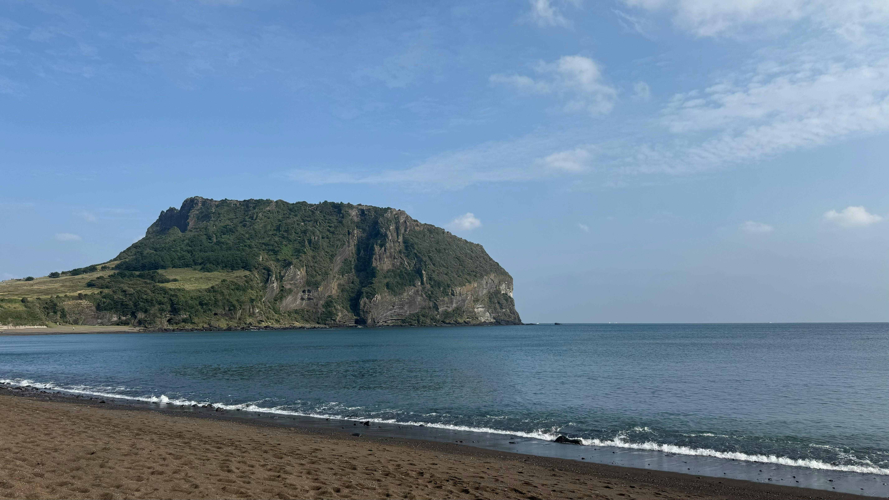

Beautiful scenery of Jeju Island
Jeju Island is a volcanic island off the southern coast of South Korea, known for its stunning natural landscapes and unique culture. It features volcanoes, lava tubes, waterfalls, and beaches, making it a popular destination for sightseeing and outdoor activities. The island is home to Hallasan, South Korea’s tallest mountain, which is also a volcanic peak. Jeju has a distinct local culture, including traditional villages, unique cuisine, and the famous haenyeo women divers. Today, it is one of Korea’s top tourist destinations, attracting both domestic and international visitors year-round

"Hallasan Mountain and volcanic landscapes"Hallasan Mountain is the highest peak in South Korea, rising 1,947 meters above sea level, and is located in the center of Jeju Island. It is a shield volcano with a crater lake at its summit called Baengnokdam, formed from past volcanic eruptions. The mountain and its surrounding volcanic landscapes are part of Hallasan National Park